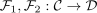
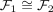
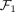
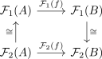
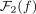

naturally isomorphic functors and preserving epimorphisms
1. Proposition
Let  be categories,
be categories,

functors such that
TFAE:

preserves epimorphisms preserves epimorphisms
preserves epimorphisms
2. Proof
2.1. 1)  2)
2)
Let  an epimorphism.
an epimorphism.
By assumption we have a commutative diagram

Here

is given as composition of epis, hence also an epi (cf. Abgeschlossenheit von Epimorphismen unter Verknüpfung2.2. 2) 1)
follows from the symmetry of the argument